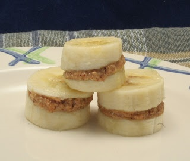

Ingredients:
2 large ripe bananas
1/4 cup Jiff Whips Penut Butter
Directions:
- Peel bananas, and cut into 1/4 to 1/2-inch slices (about 12 per banana).
- Spread about 1 teaspoon Jiff Whips Penut Butter
- Top with the remaining slices.
These Banana Stacks are Best Served chilled.